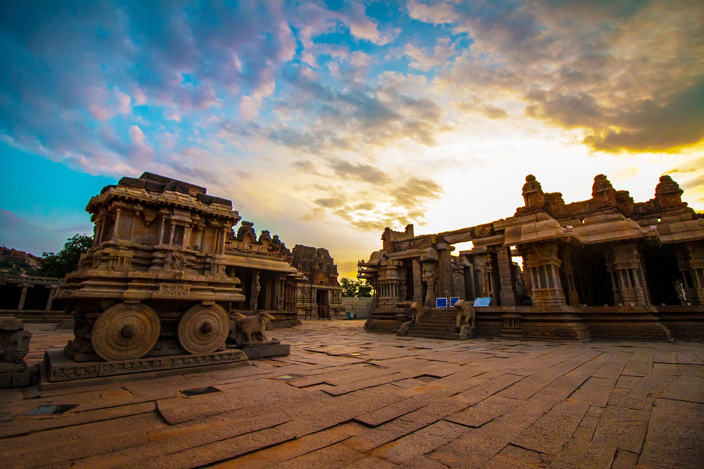
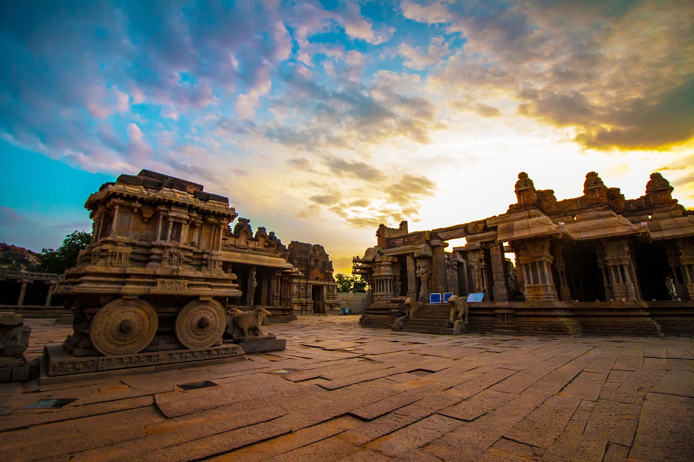

Hampi
Hampi or Hampe, also referred to as the Group of Monuments at Hampi, is a UNESCO World Heritage Site located in east-central Karnataka, India. It is a pilgrimage centre of the Hindu religion. Hampi was the capital of the Vijayanagara Empire in the 14th century.
By 1500 CE, Hampi-Vijayanagara was the world's second-largest medieval-era city after Beijing, and probably India's richest at that time, attracting traders from Persia and Portugal. The Vijayanagara Empire was defeated by a coalition of Muslim sultanates; its capital was conquered, pillaged and destroyed by sultanate armies in 1565, after which Hampi remained in ruins. Located in Karnataka near the modern-era city of Hosapete, Hampi's ruins are spread over 4,100 hectares (16 sq mi) and it has been described by UNESCO as an "austere, grandiose site" of more than 1,600 surviving remains of the last great Hindu kingdom in South India that includes "forts, riverside features, royal and sacred complexes, temples, shrines, pillared halls, mandapas, memorial structures, water structures and others". Hampi predates the Vijayanagara Empire; there is evidence of Ashokan epigraphy, and it is mentioned in the Ramayana and the Puranas of Hinduism as Pampaa Devi Tirtha Kshetra. Hampi continues to be an important religious centre, housing the Virupaksha Temple, an active Adi Shankara-linked monastery and various monuments belonging to the old city.
 
